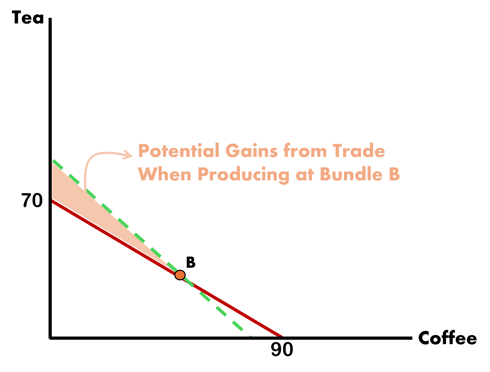

Why Would Foreign Trade?
Foreign is outright better at producing Coffee & Tea than Home. How could they benefit from trading with the inferior country?
. . .
If Foreign doesn’t trade, they are bound by their own production possibilities. With trade, they can exceed their own production capacities, even when they hold an Absolute Advantage
The same logic can be applied to Home. They will be able to exceed domestic production capacity by trading.
To trade, both nations must be better off from doing so. This will mean that the price of the good should fall somewhere in between both markets
\[ P_{c}^{H} < P_{c}^{W} < P_{c}^{F} \]
Benefits from Trading - Home
Home
Arbitrarily, let \(P_{c}^{W} = 1\)

Benefits from Trading - Foreign
Foreign
Arbitrarily, let \(P_{c}^{W} = 1\)

Free Trade
Now that we have established that both countries benefit from trade, how do we determine who produces what?
. . .
The pattern of exports and imports is determined by Opportunity Costs of production in each country, which identifies each country’s pattern of Comparative Advantage
Free Trade Prices
Since the relative price of coffee is \(7/9\) at Home but \(12/10\) in Foreign, there is an incentive to export Home’s coffee to Foreign for a higher return
. . .
Alternatively, the relative price of tea is:
\[ P^{H}_{t} = \dfrac{9}{7} > \dfrac{10}{12} = P^{F}_{t} \]
Since tea sells better in Home, Foreign is incentivized to export their tea to Home
. . .
The Ricardo Model predicts that Home exports Coffee and Foreign exports Tea
Free Trade Dynamics
As Home exports coffee \(\uparrow\), the local supply \(\downarrow\) (making it more scarce)
Less local supply \(\Rightarrow\) Higher coffee price at Home
Higher Foreign supply \(\Rightarrow\) Lower coffee price in Foreign
. . .
Similarly, Foreign exports of tea to Home bid down prices abroad and up locally
Changes to exports and imports stop once the relative price is the same in both countries
No incentive to deviate from this point \(\Rightarrow\) Equilibrium condition met
Free Trade Equilibrium
What would the new world price of coffee look like for Home in this setting?
We first measure the world capacity to produce coffee & tea. This is calculated by seeing how much both countries can produce if they focus their entire workforces towards a single good:
\[\begin{align*} Q^{W}_{t} &= \text{MPL}_{t}^{H} * \bar{L} + \text{MPL}_{t}^{F} * \bar{L} = 70 + 120 = 190 \\ \\ Q^{W}_{c} &= \text{MPL}_{c}^{H} * \bar{L} + \text{MPL}_{c}^{F} * \bar{L} = 90 + 100 = 190 \end{align*}\]
. . .
The World PPF’s slope is the line between these two “max” prodcution points, and it has slope equal to -1. The World Price would be 1.
Free Trade Equilibrium
The World Price (1) of coffee is greater than the Opportunity Cost of producing coffee at Home \((\dfrac{7}{9})\)
What do Home producers do?
. . .
- They shift labor toward producing more coffee
. . .
How much does labor shift?
. . .
- It depends on wages across industries
Free Trade Labor Shift
Recall wages at home are given by:
\[ w_{c}^{H} = \text{MPL}_{c}^{H} * P_{c}^{H} \;\;\; \& \;\;\; w_{t}^{H} = \text{MPL}_{t}^{H} * P_{t}^{H}\]
Also recall that under trade we have
\[ \dfrac{P_{c}^{H}}{P_{t}^{H}} = 1 \; , \;\; \text{MPL}_{c}^{H} = 9 \text{ and } \text{MPL}_{t}^{H} = 7 \]
The wage ratio is given by \(\dfrac{P_{c}^{H} * \text{MPL}_{c}^{H}}{P_{t}^{H} * \text{MPL}_{t}^{H}} = 1 * \dfrac{9}{7} = \dfrac{9}{7}\)
. . .
Which implies that wages are higher in the coffee industry than in the tea industry
All Home workers go work in the coffee industry
Autarky Production & Consumption
Let’s visualize the gains of trade. First, let’s see where each country would produce & consume under Autarky
Let the ICs and PPFs for each country be equal at bundles:
Home

Foreign

Autarky Production & Consumption
Under Autarky, a nation consumes as much as they produce.
Production Bundles

Consumption Bundles

Ricardo’s logic states that both countries will enhance their welfare by specializing and trading
Free Trade Production & Consumption
Under Free Trade, both countries specialize in the good they have the Comparative Advantage
Production Bundles

Consumption Bundles

Home consumes more tea than they did under Autarky (35 \(\Rightarrow\) 40)
Foreign consumes more coffee than they did under Autarky (30 \(\Rightarrow\) 45)
Free Trade - Relative Wages
So far we have seen that there are gains from trade and that trade flows are determined by comparative advantages
Prices converged, but wages do not
Wage levels differ across countries with trade, and wages are determined by absolute advantage, not comparative advantage
- This is a third, less-emphasized lesson of the Ricardian Model
Free Trade - Relative Wages
Due to markets being perfectly competitive, firms pay workers the value they add to production (marginal product)
Recall that \(\text{MPL}_{c}^{H} = 9\). This is a real wage, measured in quantity of goods rather than money.
Workers sell the coffee they earn at the world market price of 1, making their real wage:
\[ \dfrac{P_{\text{coffee}}}{P_{\text{tea}}} * \text{MPL}_{c}^{H} = 9 \;\; \text{units of tea} \]